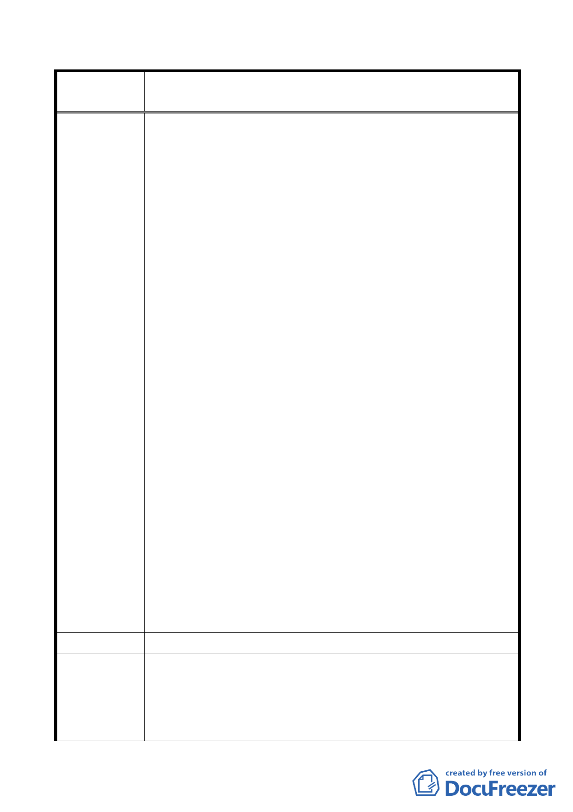

修訂本市都市計畫「臺北市山坡地開發建築要點」為「臺北市
案 名 都市計畫劃定山坡地開發建築管制規定」案
重疊，造成法令適用問題，更影響數以萬計土地所有權人的
權利及義務，茲分述如下：
（一）經查「保變住」編號住六-五、 六-四地區（前已納入
山開要點地區）已向貴府申請成立自辦市地重劃籌備
會在案，該籌備會向貴府擬以「山開要點」辦理開發，
貴府函復該會須依市地重劃辦法規定辦理開發，不能
以「山開要點」規定辦理，唯今本地區貴府又將該地
區劃入「山坡地開發建築管制規定」範圍內，同樣是
台北市政府管轄，然市地重劃主管機關為貴府地政
局，「山開建築」主管單位為都市發展局建管處，形
成一個地區兩種法令規定，兩個主管機關，兩個開發
方式，土地所有權人依「市地重劃」辦理也不是，依
「山開建築管制規定」辦理也不是，如貴府各單位法
規未能統一，而各自執行，那恐怕會成為「文林苑」
之翻版，那苦的是老百姓，政府勞心勞力修訂法規的
好意豈不成了導火線。
（二）詳閱公開徵求意見綜理表各欄：貴府評估結果均認為
如予放寬市地重劃恐有山坡地大規模開挖整地，破壞
坡地安全，如果貴府堅決認定所有 22 處「保變住」市
地重劃區應依旨揭「山開建築規定」 辦理開發，就應
於本次修訂「山開建築管制規定」全面剔除「保變住」
市地重劃區，改全部依旨揭規定辦理，方息紛爭。
三、綜上結論，法規訂定是為明確執行與遵循，而非修訂成為
爭議之法條，為息爭議及法規適用，故建議旨揭管制規定廢
除市地重劃方式辦理開發，全部遵循旨揭管制規定辦理開
發，俾百姓統一遵照辦理，免破壞坡地安全。
建議辦法
1.本市保變住共25處，其中1處已開發完成，2處位於平地，其
市府回應
餘22處皆須依本是保護區變更為住宅區開發要點及本計畫規
定辦理。
說 明 2.依本府加強山坡地安全管理之既定政策，不宜放寬開發強
度，避免衝擊山坡地環境安全。
- 20 -